Central de Jogos de Informática
Novo Internet das Coisas Aula animada na TV + jogo de arrastar Jogar agora-
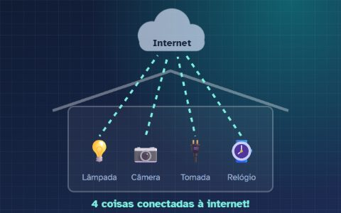
NovoAula na TV Internet das CoisasJogo 18 · Redes -
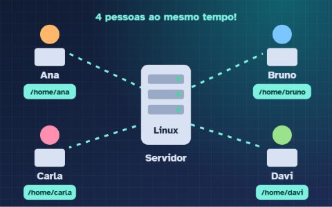
Novo Tipos de Sistemas OperacionaisJogo 17 · Sistemas -
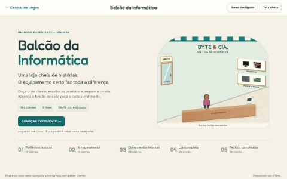
Novo Balcão da InformáticaJogo 16 · Hardware -
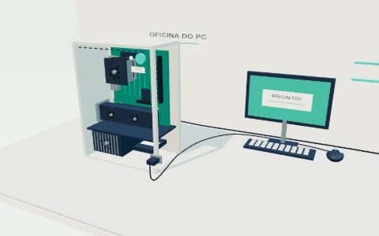
3D Oficina do PCJogo 15 · Hardware Abra uma vez com internet para jogar offline. - Carrinho do SaberJogo 14 · Hardware
-
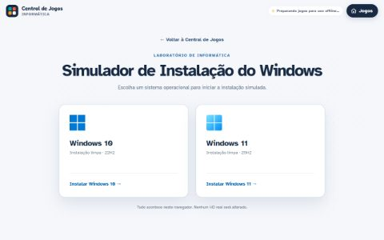
Simulador Instalação do WindowsLaboratório · Sistemas -
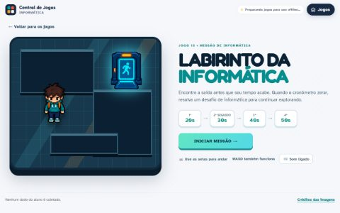
Labirinto da InformáticaJogo 13 · Revisão -
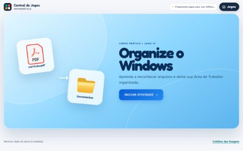
Organize o WindowsJogo 12 · Sistemas -
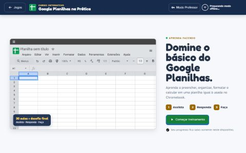
Google PlanilhasJogo 11 · Escritório -
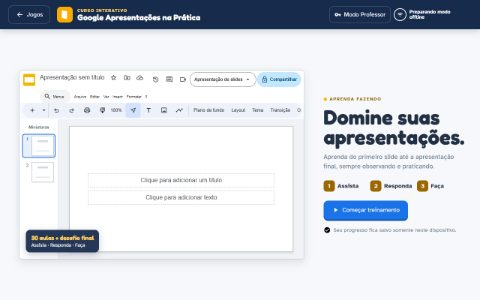
Google ApresentaçõesJogo 10 · Escritório -
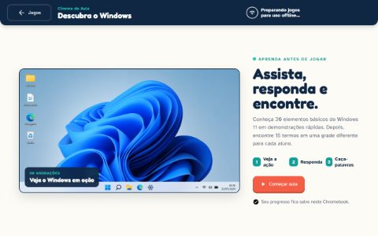
Descubra o WindowsJogo 09 · Sistemas -
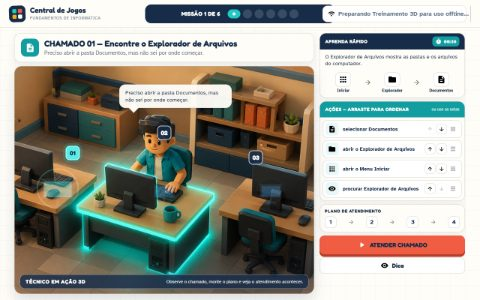
3D Técnico em Ação 3DJogo 08 · Suporte Abra uma vez com internet para jogar offline. - Turma Desafio TIJogo 07 · Revisão
-
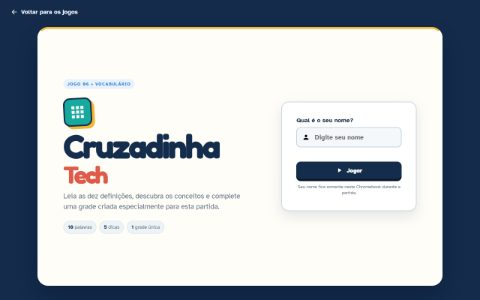
Cruzadinha TechJogo 06 · Revisão -
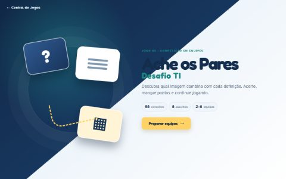
Turma Ache os ParesJogo 05 · Revisão -
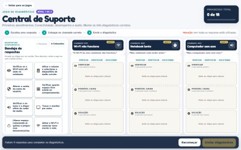
Central de SuporteJogo 04 · Suporte -
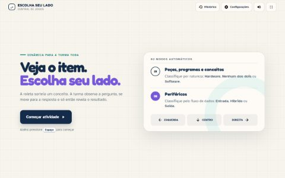
Turma Escolha seu LadoJogo 03 · Hardware -
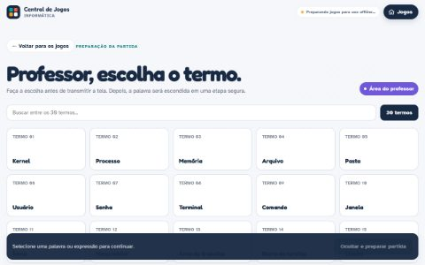
Turma Forca do SistemaJogo 02 · Sistemas -
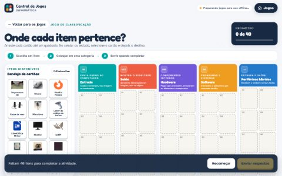
Classifique os ItensJogo 01 · Hardware
Nenhum jogo encontrado. Tente outra palavra.
← Voltar para os jogos
Jogo de classificação
Onde cada item pertence?
Arraste cada cartão até um quadrado. No celular ou teclado, selecione o cartão e depois o destino.
Progresso
0 de 40
Itens disponíveis
Bandeja de cartões
Faltam 40 itens para completar a atividade.